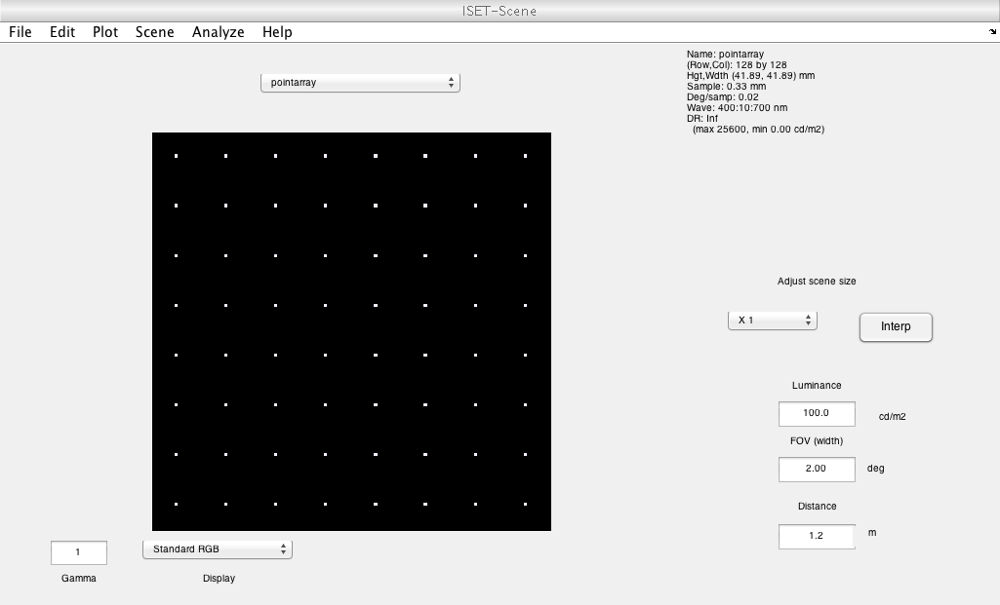
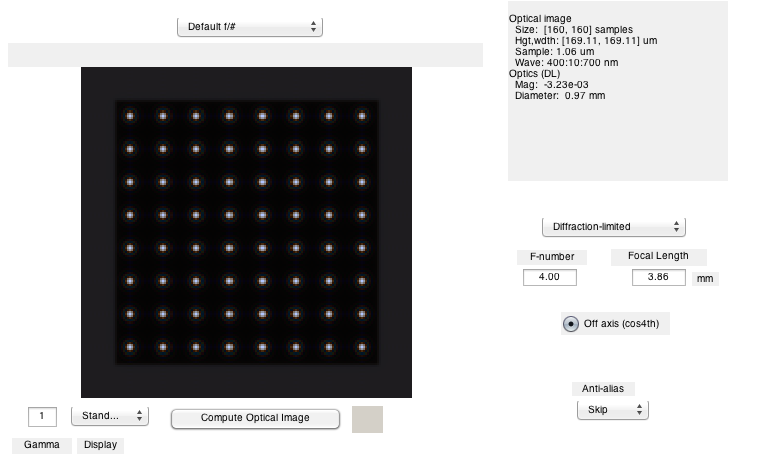
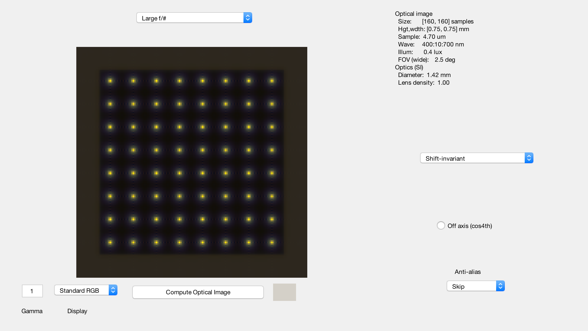
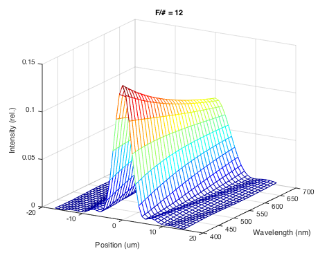
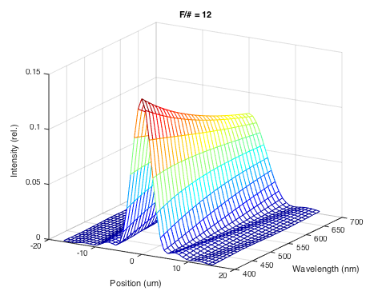

t_opticsDiffraction
Calculate images using diffraction limited optics and a few simple examples.
(c) Imageval Consulting, LLC, 2012
Contents
Initialize
ieInit;
Create a scene and optical image to go with it
scene = sceneCreate('point array'); scene = sceneSet(scene,'h fov',2); vcAddAndSelectObject(scene); sceneWindow; % Default optics is diffraction limited. oi = oiCreate; optics = oiGet(oi,'optics'); oi = oiCompute(oi,scene); % Set name after compute, because the computer % itself sets the oi name to be that of the scene. oi = oiSet(oi,'name','Default f/#'); vcAddAndSelectObject(oi); oiWindow; opticsGet(optics,'f number')
ans = 5.666666666666667 
Now, create diffraction limited optics with f/# of 12
The larger f/# blurs the image more It has larger depth of field, however, because the aperture is smaller.
optics = opticsSet(optics,'f number',12); oi = oiSet(oi,'optics',optics); oi = oiCompute(oi,scene); oi = oiSet(oi,'name','Large f/#'); vcAddAndSelectObject(oi); oiWindow; % Check the inter-related parameters p = opticsGet(optics,'pupil diameter','mm') f = opticsGet(optics,'focal length','mm') f/p
p =
1.416666666666667
f =
17
ans =
12
 How the diffraction-limited blur depends on wavelength
vcNewGraphWin; uData = oiPlot(oi,'ls wavelength'); title(sprintf('F/# = %.0d',opticsGet(optics,'f number'))) % Look at the returned data structure uData
uData =
x: [1x41 double]
wavelength: [31x1 double]
lsWave: [31x41 double]
 
